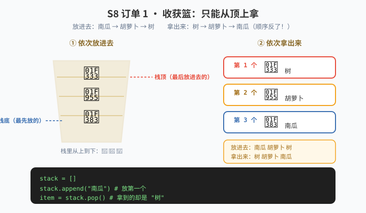
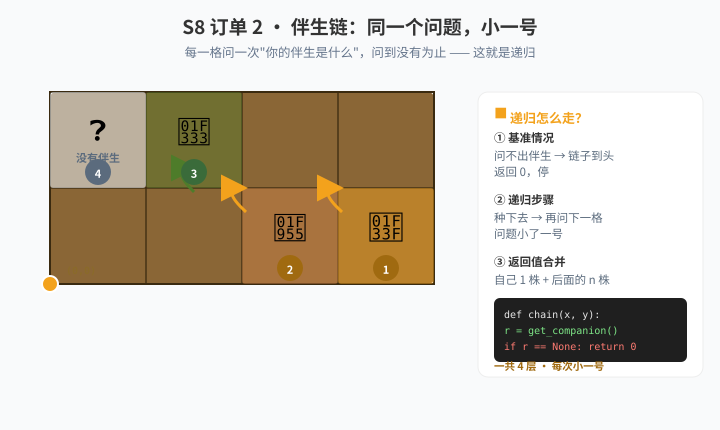

📌 建议先做这一关只用 S4 学过的伴生和 S3 学过的列表——不学任何新 API。
但它是特殊订单 3（DFS 与 BFS）的前置：迷宫那一关会用到这里学的栈和递归，学过再去看会轻松很多。
🎮 游戏进度 · 课前准备
📌 课前在游戏里做这些事
- 确认你已经能读懂
get_companion()的两层解包（S4 知识卡 ③）。 - 在田里种几株灌木，用
get_companion()问出它想要的伴生，看看伴生那一格是不是也会问出伴生——这就是这一关的主角。 - 复习
append()和pop()（S3 的列表、特殊订单 1 的大南瓜都用过）。 - 留出一块小田（
set_world_size(5)），这关不用很大。
📖 知识卡 · 6 张
① 栈：只能从顶上拿东西的架子
想象农场仓库只有一格宽，只能从最上面放东西、也只能从最上面拿东西。放进去的最后一个，拿出来就是第一个——这叫后进先出。
stack = [] # 一个空栈
stack.append("南瓜") # 放进去
stack.append("胡萝卜")
stack.append("树")
# 现在栈里（从底到顶）：南瓜 → 胡萝卜 → 树
item = stack.pop() # 只能拿最上面那个
quick_print(item) # → 树（不是南瓜！）为什么"最后放的先拿"？因为栈就是这样规定的。关键不在于背定义，在于它能帮你"记住来时的路"——后面订单 2 会看到。
② 栈的三个动作
stack = []
stack.append(x) # 压入：放一个进栈顶
top = stack[-1] # 偷看栈顶（不拿走）
top = stack.pop() # 弹出：拿出栈顶，同时删掉它
len(stack) # 栈里现在有几个
if len(stack) > 0: # 弹之前先问一句，不然会报错
top = stack.pop()最容易踩的坑：pop() 在空栈上会报错。弹之前一定要先判断栈里有没有东西。
③ 递归：函数自己调用自己
递归就是函数在还没结束的时候，又调用了自己。听起来危险，但它有个铁律：每次调用，问题都必须变小一点。
def count_down(n):
if n == 0: # ← 基准情况：必须有一条"到此为止"
return 0
return 1 + count_down(n - 1) # ← 递归步骤：n 变小了
quick_print(count_down(3)) # → 3递归三要素：
① 基准情况——什么时候停？（n == 0）
② 递归步骤——问题怎么变小？（n - 1）
③ 返回值——小问题的答案怎么凑成大问题的答案？（1 + ...）
④ 递归在游戏里长什么样：伴生链
S4 你学过伴生：一株植物会告诉你"我想在 (x, y) 那格种什么"。
现在关键的一步：那一格种下去之后，它自己又是一株植物，也会问出伴生！于是就形成了一条链。
def plant_chain(x, y):
"""在这格种下伴生，顺着链子一直种下去，返回一共种了几株"""
result = get_companion()
if result == None:
return 0 # ① 基准情况：链子到头了
want, target = result # ② 这一格要种什么
tx, ty = target
go_to(tx, ty)
plant(want)
more = plant_chain(tx, ty) # ③ 递归：新种的也是一株植物
go_to(x, y)
return 1 + more # ④ 返回值合并为什么这叫"递归"？因为 plant_chain 处理的是"从这格开始的一整条链"，而它调用的 plant_chain 处理的是"从下一格开始的一整条链"——同一个问题，小一号。
三要素对应关系：result == None 是基准情况；plant_chain(tx, ty) 是递归步骤；1 + more 是返回值合并。
⑤ 递归为什么不会无限转圈
因为每往下走一层，空间就小一圈。伴生链每种下一株，离起点就近一格，格子是有限的，所以一定会走到"没有伴生"的地方停下来。
def depth(x, y):
result = get_companion()
if result == None:
return 0
want, target = result
tx, ty = target
return 1 + depth(tx, ty)
quick_print(depth(get_pos_x(), get_pos_y())) # 这条链有多长反过来说：如果你的递归停不下来，99% 是忘了写基准情况，或者问题没有变小（原样传了进去）。
这和 DFS 死循环是同一个病根——所以下一关的 DFS 里，visited 标记就是基准情况的替代品。
⑥ 栈和递归，其实是同一件事
递归之所以能返回来，靠的是计算机在背后给每次调用开了一个"格子"，把当前的参数、位置都存起来，等你这一层算完了再取出来接着算。这个格子堆起来，就是一个栈。
手动版（用栈）
你自己开一个列表当栈，手动把位置压进去、弹出来：
stack.append(...)
stack.pop()
你看得见那个栈，心里有底。
自动版（用递归）
你只管写 f(x, y)，计算机替你开栈：
f(x, y)
→ f(tx, ty)
代码短，但栈是隐形的。
所以：迷宫里的 DFS，你用栈写还是用递归写，做的是同一件事——只是"谁来记账"不同。
下一关你会看到两种写法。能看懂就行，不要求都会写。
🚜 农场订单 · 闯关任务
收获篮：一个只能从顶上拿的篮子
① 依次把 南瓜、胡萝卜、树 放进篮子；
② 把三个都拿出来，看看拿出来的顺序是不是和放进去的反过来；
③ 再放两个进去，然后只拿最上面那个，把结果打印出来。

💡 思路拆解（先自己读一遍再看）
放进去：stack.append(物品)——每次放一个，新的永远在最上面。
拿出来：item = stack.pop()——一次做两件事：拿到栈顶 + 把它删掉。
空篮子怎么办：pop() 在空栈上会报错，所以先判断：if len(stack) > 0:。
这一单真正要记住的：拿出来的一定是最后放进去的那个。三样东西放进去、南瓜树胡萝卜地拿出来，顺序完全反了——这一点很多学生会猜错，亲手跑一次就记住了。
🔧 常见报错 · 卡住了先看这里
IndexError: pop from empty list → 在空栈上 pop 了。先 if len(stack) > 0:。
拿出来的顺序不对 → 那就对了！栈本来就是反着拿的。如果你要正着拿，那要用队列（先进先出），不是栈。
pop 之后东西还在 → 检查是不是写成了 stack[-1]（那只是看，不删）。要删必须用 pop()。
quick_print 打出来是乱码 → 别直接打 Entities.XXX，打你自己写进去的字符串（比如 "南瓜"）。
伴生链：顺着链子一直种下去
然后对新种下的那一格再问一次——它可能还有伴生！
客户要你用递归把整条链一次种完，并且数出一共种了几株。

💡 思路拆解（先自己读一遍再看）
先想清楚"这条链会停在哪"：某一格问不出伴生的时候（get_companion() 返回 None）。这就是基准情况。
递归步骤：种下伴生 → 对新种的那格再问一次——plant_chain(tx, ty)，问题小了一格。
返回值合并：1 + more——自己算 1 株，加上后面那条链的株数。
为什么必须走回去：plant_chain(tx, ty) 会把无人机带到链的末尾。函数返回前要 go_to(x, y) 回到原处，否则调用它的地方会找不着北。
这是递归最容易错的地方——回来和去一样重要。
🔧 常见报错 · 卡住了先看这里
无限循环 / 卡死 → 忘了基准情况，或者没有判断 None。每一层都必须能停。
TypeError: cannot unpack non-sequence → 解包层级错了。get_companion() 返回两层：先拆 want, target，再拆 tx, ty。
数出来的总数是 1 → 递归那一步没真正调用自己，或者返回值没合并（忘了写 1 + more）。
种完的位置全乱了 → 忘了走回去。递归函数返回前要回到自己进来的那一格。
胡萝卜种不下去 → 胡萝卜要种在翻过的土上，先 till()。这是 S4 的老规矩。
🚪 自查门
🧠 换需求测试 · 真会了才过
- 换输出：把"数株数"改成"数这条链有多深"——代码要改几行？（递归的骨架完全不用动）
- 换顺序：如果想按从链尾到链头的顺序打印，能用递归做吗？想想先递归再 print 和 先 print 再递归 的区别。
- 换结构：把递归改成用栈的手动版（
append压位置、pop弹位置）——能跑出一样的结果吗？ - 口述题：为什么递归一定会停？如果不写基准情况会怎样？
📌 老师注记这一关没有新 API，纯粹是思维训练，所以可以讲得慢一点。
关键是把"栈"和"递归"绑在真实需求上，不要孤立讲定义：
① 栈绑在"记住来时的路"上——迷宫 DFS 撞墙要退回，靠的就是它；
② 递归绑在"伴生链"上——每一格都是同样的问题小一号，天然递归。
讲法建议：伴生链先手写一个不用递归的版本（while 循环 + 列表存链），跑通了再改成递归。让学生亲眼看到"代码变短了，但想清楚的时间变长了"——这个对比比任何定义都管用。
学完立刻去特殊订单 3：那里 DFS 的"栈版"和"递归版"就是这一学的直接应用。